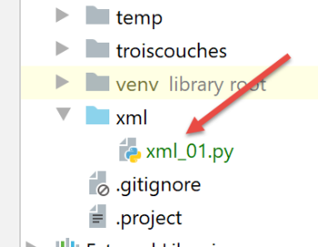

26. Du dictionnaire à XML et vice-versa
Nous nous proposons ici de découvrir le module [xml2dict] qui permet de transformer :
- une chaîne XML en dictionnaire :
- un dictionnaire en chaîne XML ; Avant l’avènement du jSON, la réponse des services web était souvent du XML (eXtended Markup Language). Par ailleurs, le protocole de ces services web était souvent SOAP (Simple Object Process Protocol). SOAP est un protocole qui s’appuie sur le protocole HTTP du web. Actuellement (2020), les services web sont plutôt de type REST (Representational State Transfer). Les services web que nous avons étudiés ne sont d’aucun de ces types mais sont définitivement plus proches de REST que de SOAP. Néanmoins je préfère dire qu’ils sont de type ‘libre’ ou ‘inconnu’ car ils ne respectent pas toutes les règles du REST.
Nous allons montrer combien il est facile de transformer nos architectures client / serveur jSON en architectures client / serveur XML. Il suffit d’utiliser le module [xmltodict].
Nous commençons par l’installer dans un terminal Python :
Ceci fait, nous allons étudier sur un exemple ce qu’on peut faire avec ce module :

Le script [xml_01] est le suivant :
- lignes 14-25 : la fonction [transform] reçoit un texte à écrire [message] et un dictionnaire [dictionary] ;
- ligne 16 : affichage du message ;
- ligne 17 : on affiche le dictionnaire reçu ;
- lignes 19-20 : ce dictionnaire est transformé en chaîne XML et celle-ci est affichée. La méthode qui sait faire cela est [xmltodict.unparse] ;
- lignes 21-23 : la chaîne XML précédente est transformée en dictionnaire et celui-ci est affiché. La méthode qui sait faire cela est [xmltodict.parse]. Cette méthode ne produit pas un dictionnaire de type [dict] mais de type [OrderedDict] (ligne 1) ;
- lignes 24-25 : on transforme le type [OrderedDict] obtenu en type [dict] à l’aide de la méthode (non encore écrite) [ordereddict2dict]. Cette méthode travaille de façon récursive. Si certaines valeurs du dictionnaire sont de type [OrderedDict, list], les valeurs de ces collections sont examinées pour savoir si elles-aussi sont de type [OrderedDict]. Si c’est le cas, elles sont transformées en type [dict]. On remarquera que la méthode [xmltodict.parse] ne produit aucun dictionnaire de type [dict] ; Avant d’examiner les fonctions manquantes, examinons les résultats pour voir ce qui est cherché :
Le test 1 (lignes 28-29) produit les résultats suivants :
- ligne 2 : le dictionnaire testé. Il faut noter un point important : la méthode [xml2dict.unparse] exisge que le dictionnaire soit de la forme {‘clé’ : valeur} où [valeur] peut être ensuite un dictionnaire, une liste, un type simple ;
- lignes 3-4 : la chaîne XML issue du dictionnaire. Elle est précédée de l’entête [<?xml version="1.0" encoding="utf-8"?>\n] qui est normalement la 1ère ligne d’un fichier XML ;
- ligne 5 : le type [OrderedDict] obtenu par la méthode [xml2dict.parse] recevant pour paramètre la chaîne XML précédente ;
- ligne 6 : le dictionnaire de type [dict] obtenu en appliquant la méthode [ordereddict2dict] au type précédent. On retrouve le dictionnaire d’origine de la ligne 2 ; Tous les autres tests sont construits sur le même schéma et devraient vous permettre de comprendre comment passer d’un dictionnaire à une chaîne XML puis de cette chaîne XML au dictionnaire d’origine.
Les autres tests donnent les résultats suivants :
- les lignes 23 et 27 montrent un point important :
- ligne 23 : les valeurs associées aux clés du dictionnaire [result] sont des nombres ;
- ligne 26 : les valeurs associées aux clés du dictionnaire [ordereddict_dictionary1] sont des chaînes de caractères. C’est une faiblesse de la bibliothèque [xmltodict]. Sa méthode [parse] ne produit que des chaînes de caractères. Cela peut se comprendre aisément :
- ligne 25 : la chaîne XML à partir de laquelle est produit le dictionnaire. Dans cette chaîne, il n’y a aucune indication du type des données encapsulées dans les balises XML. [xmltodict.parse] fait ce qu’il y a de plus logique : elle laisse tout en chaîne de caractères dans le dictionnaire produit. On trouve d’autres bibliothèques similaires à [xmltodict] où le type des données encapsulées est indiqué dans les balises. On pourrait trouver par exemple la balise [<enfants type=’int’>2</enfants>] ;
- la conséquence de ceci est que lorsqu’on exploite un dictionnaire produit par le module [xmltodict] on doit connaître le type des données qu’il encapsule pour pouvoir passer du type ‘str’ au type réel de la donnée ; Attardons-nous maintenant sur la méthode [ordereddict2dict] qui transforme un type [OrderedDict] en type [dict] :
- ligne 30 : la fonction [ordereddict2dict] reçoit un type [OrderedDict] comme paramètre ;
- ligne 32 : le dictionnaire de type [dict] qui sera rendu ligne 37 par la fonction ;
- ligne 33 : on explore tous les tuples (clé, valeur) du dictionnaire [ordered_dictionary] ;
-
ligne 35 : dans le nouveau dictionnaire, la clé [key] est gardée mais la valeur associée n’est pas [value] mais [check(value)]. La fonction [check(value)] est chargée de trouver, si [value] est une collection, tous les éléments de type [OrderedDict] et de les transformer en type [dict] ; La méthode [check] est définie aux lignes 5-16 :
-
ligne 5 : on ne connaît pas le type de [value], aussi n’a-t-on pu écrire [value : type] ;
- lignes 7-8 : si [value] est de type [OrderedDict] alors on appelle de façon récursive la fonction [ordereddict2dict] qu’on vient de commenter ;
- lignes 9-11 : un autre cas possible est que [value] soit une liste. Dans ce cas, ligne 11, on appelle la fonction [list2list] des 19-27 ;
- lignes 12-14 : le dernier cas est que [value] n’est pas une collection mais un type simple. La fonction [check], comme les fonctions [ordereddict2dict] et [list2list] sont récursives. On sait qu’alors il faut toujours prévoir le cas où la récursion s’arrête. Les lignes 12-14 sont ce cas ;
-
ligne 16 : la fonction [check] appelée récursivement ou pas produit une valeur [valeur2] qui doit remplacer le paramètre [value] de la ligne 5 ; La méthode [list2list] définie aux lignes 19-27 exploite une liste passée en paramètre. Elle va l’explorer et remplacer toute valeur de type [OrderedDict] trouvée dedans en un type [dict].
-
ligne 21 : la nouvelle liste que va créer la fonction ;
- lignes 23-25 : toutes les valeurs [value] de la liste sont explorées et remplacées par la valeur [check(value)]. Cette valeur [value] peut elle-même contenir des éléments de type [list] ou [OrderedDict]. Ils seront traités correctement par la fonction récursive [check] ;